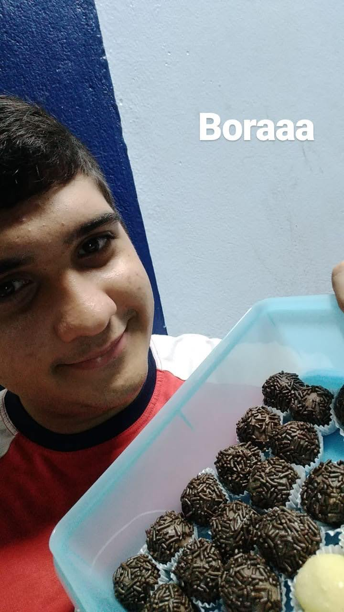

- Liderança: Liderei minha turma da escola por 2 anos, tive que sair para poder ter mais tempo para estudar mas a coordenação e meus colegas de classe ainda me solicitavam mais do que os líderes que me sucederam.Fora isso também costumo organizar meu grupo de amigos nas atividades que fazemos. Dentro da igreja, os catequistas da igreja pediram para que eu liderasse a turma da crisma que eu fazia parte.
- Sociabilidade: Tenho muita facilidade para fazer amigos e manter amizades, tenho algumas amizades que estão presentes na minha vida desde meus primeiros momentos de vida, ainda converso e saio com mais da metade da minha turma de pré e fiz um grupo de amigos na faculdade, mesmo tendo cursado apenas 2 anos de forma remota graças a pandemia.
- Comunicação: Em diversas ocasiões fui escolhido para passar informes em público, também foi me solicitado para ler o texto da escola para os professores, pais e meus colegas de turma na minha colação de grau. Nunca tive dificuldades para fazer apresentações de seminário tanto na faculdade quanto na escola.
- Criatividade: Durante a escola, houve uma rifa de são joão, que como recompensa, a turma que tivesse maior número de vendas de rifas, poderia viajar pela escola sem custos adicionais. Após um dia frustado vendendo rifas, tive a ideia de vender brigadeiros. Em um período de um mês consegui com ajuda de meus colegas um lucro superior a 2300 Reais. Nós ganhamos
- Determinação: Sempre tive determinação para cumprimir todas as metas, sendo elas pequenas ou grandes, todas as obrigações tem que serem realizadas. Quando crio uma meta tento organizar ela para cumprimir dentro de um prazo limite e atender todas as satisfações daquela meta nas condições que tenho para realizar, sendo ler um livro, entregar um trabalho ou passar na fase de um jogo.
